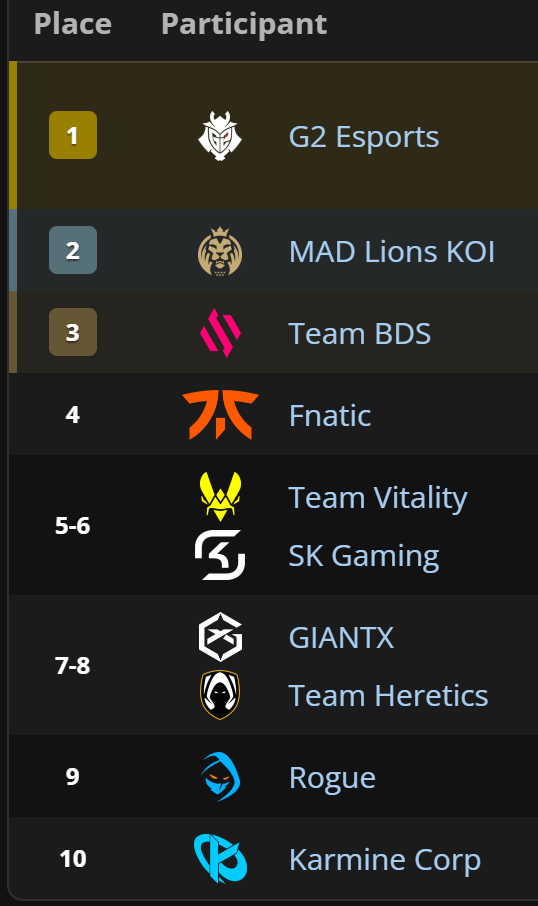

Pour réunir les fonds nécessaires au rachat du slot en LEC, la direction prend une décision radicale et déchirante : céder son prodige Caliste au grand rival européen, G2 Esports. Le chèque permet d'ouvrir les portes de l'élite, mais il laisse un vide immense au sein du club.
L'annonce du transfert provoque une onde de choc dans toute la communauté. Sur les réseaux sociaux, la stupeur laisse rapidement place à la colère. Une grande partie du Blue Wall ne comprend pas comment le club a pu sacrifier son plus grand espoir pour accéder au Tier 1.
Privée de sa pièce maîtresse dès le début de l'aventure en LEC, l'équipe peine à trouver un remplaçant à la hauteur. La pression médiatique et les attentes démesurées écrasent le groupe avant même le lancement officiel de la saison.
Pendant que Caliste brille sous les couleurs de G2 Esports et s'impose comme la nouvelle star de la ligue, la Karmine Corp aborde ses premiers pas dans l'élite dans un climat électrique, fragilisée sportivement et divisée avec ses propres supporters.
